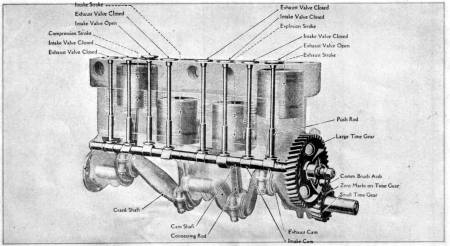

A spark ignites the compressed mixture above each piston. The expanding gases drive the piston down. The crankshaft turns the camshaft at half speed to open the valves at the right strokes.
The cylinders fire in the order 1, 2, 4, 3. Pistons 1 and 4 rise together; their valves determine which cylinder compresses a fresh charge and which expels exhaust.
